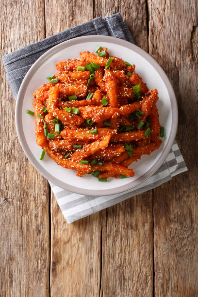

Chilli Patato
Chilli Potato is a popular Indo-Chinese dish that is loved by many. It is a spicy and flavorful dish made with crispy fried potatoes, tossed in a sweet and sour chilli sauce. The dish is often garnished with chopped spring onions and served hot, making it a perfect snack or appetizer. Chilli Potato is a staple in many Indian and Chinese restaurants, and its recipe can be easily found online. With its addictive flavor and crunchy texture, it's no wonder why Chilli Potato is a favorite among foodies!
Ingredients:
- 2-3 large potatoes, peeled and cut into bite-sized wedges or cubes
- 1/2 cup all-purpose flour
- 1/2 teaspoon salt
- 1/4 teaspoon black pepper
- Vegetable oil for frying
- 2 tablespoons vegetable oil
- 2 cloves garlic, minced
- 1 small onion, finely chopped
- 1 tablespoon grated fresh ginger
- 1 tablespoon soy sauce
- 1 tablespoon tomato ketchup
- 1 tablespoon chilli sauce
- 1 tablespoon vinegar
- 1 teaspoon sugar
- Salt and pepper to taste
Instructions:
- Mix flour, salt, pepper, and garlic powder (if using) in a bowl.
- Coat potato wedges or cubes with the flour mixture.
- Fry in hot oil until golden brown and crispy (3-4 minutes per batch).
- Drain on paper towels.
- Sauté garlic, onion, and ginger in oil until translucent.
- Add soy sauce, ketchup, chilli sauce, vinegar, sugar, salt, and pepper. Simmer for 2-3 minutes.
- Toss fried potatoes with chilli sauce.
- Garnish with spring onions and sesame seeds.
- Serve hot with lemon wedges.